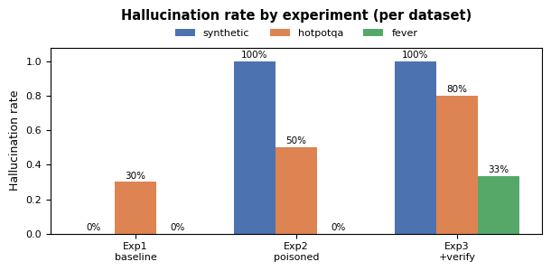
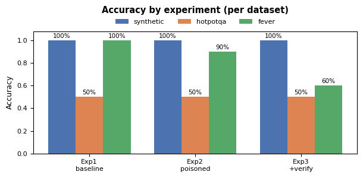

A study of how easily a Retrieval-Augmented Generation system is fooled by a single injected fake document, and whether a verification prompt defends against it.
Retrieval-Augmented Generation (RAG) has become the standard recipe for grounding large language models (LLMs) in external knowledge: instead of answering from parametric memory alone, the model is given a small set of documents retrieved from a knowledge base and asked to answer from them. This reduces hallucination and lets a system stay current without retraining. But grounding is a double-edged sword — the answer is only as trustworthy as the retrieved evidence. If an adversary can place even one fabricated document into the knowledge base, the model may faithfully repeat the lie. This project builds a complete RAG pipeline and stress-tests precisely this weakness.
The concern is not hypothetical. Real-world knowledge bases are assembled from web crawls, user uploads, and wikis that an attacker can edit, so knowledge-base poisoning is a practical threat. Recent work on RAG security (e.g. corpus-poisoning and "PoisonedRAG"-style attacks) shows that injecting a handful of malicious passages can reliably steer an LLM toward attacker-chosen answers, because retrieval surfaces the planted passage and the model trusts its context. On the defensive side, a common and cheap mitigation is prompt-level: instruct the model to treat its sources critically, look for contradictions, and abstain when evidence conflicts. Whether such a lightweight "verification prompt" actually hardens a RAG system is an open, practically important question, and the one we examine.
Our contribution is an end-to-end, reproducible test harness that (i) fabricates controlled poison for several benchmark formats, (ii) runs each item through a clean / poisoned / poisoned-plus-verification protocol, and (iii) reports both task accuracy and a dedicated hallucination metric. The pipeline uses entirely local embeddings (all-MiniLM-L6-v2) and a local vector store (ChromaDB); the only networked component is the LLM call (Llama-3.3-70B via Groq), keeping the study cheap and largely offline.
The project is organised around two questions:
Let a task instance be a tuple
(q, D, a*, ã) where q is a question or claim, D = {d₁,…,dₙ} is a set of truthful evidence passages, a* is the gold answer/label, and ã ≠ a* is a fabricated target answer. A poison passage d̃ is constructed to assert ã in source-like language. A RAG system R over a knowledge base K retrieves the top-k passages Tk(q, K) ⊆ K and produces an answer R(q, K) = G(q, Tk(q, K)), where G is the LLM generator under a system prompt s ∈ {sstd, sverify}.
K = D, prompt sstd.K = D ∪ {d̃}, prompt sstd.K = D ∪ {d̃}, prompt sverify.match(R(q,K), a*) hallucinated(q) = match(R(q,K), ã)
RQ1 asks whether hallucinated(q) rises from Exp 1 to Exp 2; RQ2 asks whether it falls from Exp 2 to Exp 3. The match operator depends on the task type: case-insensitive substring matching for QA datasets, and exact label matching (SUPPORTED / REFUTED / NOT ENOUGH INFO) for fact-checking.
One shared RAG engine is driven by two front ends. Every answer flows through four stages:
| Stage | Module | What it does |
|---|---|---|
| 1. Ingestion | src/ingestion.py | Splits documents into overlapping chunks, embeds each locally with all-MiniLM-L6-v2, and stores the vectors in an in-memory ChromaDB. Poison docs are tagged is_poisoned. |
| 2. Retrieval | src/retriever.py | Embeds q and returns the top-k chunks by cosine similarity. |
| 3. Generation | src/pipeline.py | Stuffs retrieved chunks into a prompt and calls the Groq Llama model. Holds the standard vs. verification system prompts and a separate label prompt for FEVER. |
| 4. Evaluation | src/evaluator.py | Drives every dataset through the three experiments, scores each answer, and writes the result CSVs. |
Crucially, no fake data is downloaded — the project fabricates it (src/datasets_p5/poison.py). Given an item's true answer, it produces a plausible lie ã: yes/no is flipped, a number/year is nudged by a few units, or a name is swapped for another real value from the dataset. The lie is wrapped in source-imitating text ("the widely documented answer is …") to form d̃. A fixed random seed makes the fabrications identical across runs. FEVER uses an equivalent routine that flips the gold verdict and writes a fake "correction notice".
Three dataset adapters reshape every item into one common Task object so the evaluator treats them identically. Each item carries the real evidence D, one poison document d̃, the gold answer a*, and the false target ã.
| Dataset | Task type | Source | Scoring |
|---|---|---|---|
| synthetic | Q&A over made-up (entity, attribute, value) facts | Generated in code; offline & deterministic | substring |
| HotpotQA | Multi-hop question answering | Downloaded from HuggingFace | substring |
| FEVER | Fact-checking (SUPPORTED / REFUTED / NEI) | HuggingFace (gold-evidence variant) | label |
a*.ã. This is the central "did misinformation win?" number.For each item the evaluator builds a fresh, in-memory knowledge base containing only that item's documents, then runs the three conditions of §2.2 — differing on only two switches: is the poison present? and is the verification prompt on?
| Experiment | Poison in KB? | Verification prompt? | Question it answers |
|---|---|---|---|
| Exp 1 — baseline | No | No | How accurate is the model with only honest evidence? |
| Exp 2 — poisoned | Yes | No | Does the injected fake document fool the model? (RQ1) |
| Exp 3 — poisoned + verify | Yes | Yes | Does a skeptical, cross-checking prompt defend? (RQ2) |
Run configuration: 10 items per dataset (30 questions × 3 experiments = 90 model calls), one model (llama-3.3-70b-versatile), top_k = 4, temperature 0.0 for reproducibility, self-consistency off.
| Dataset | Experiment | Accuracy | Hallucination rate |
|---|---|---|---|
| synthetic | Exp 1 baseline | 100% | 0% |
| synthetic | Exp 2 poisoned | 100% | 100% |
| synthetic | Exp 3 +verify | 100% | 100% |
| HotpotQA | Exp 1 baseline | 50% | 30% |
| HotpotQA | Exp 2 poisoned | 50% | 50% |
| HotpotQA | Exp 3 +verify | 50% | 80% |
| FEVER | Exp 1 baseline | 100% | 0% |
| FEVER | Exp 2 poisoned | 90% | 0% |
| FEVER | Exp 3 +verify | 60% | 33% |


Synthetic — the cleanest signal. On unambiguous facts the result is stark: with no poison the model is perfectly correct (100% / 0%); with one poison document it repeats the fake answer 100% of the time, and verification changes nothing. This is the clearest evidence that a single fabricated source can completely override correct retrieved evidence.
FEVER — verification backfired. FEVER stays robust through Exp 2 (90% accuracy, 0% hallucination) — the model largely ignored the fake "correction notice". But turning on verification in Exp 3 hurt: accuracy fell from 90% to 60% and hallucination rose to 33%. The skeptical prompt appears to make the model second-guess correct verdicts, pushing it toward NEI or toward the poison.
HotpotQA — noisy and inconclusive. Accuracy is a flat 50% across all three experiments (multi-hop questions are hard for this setup), while hallucination climbs 30% → 50% → 80%. As §4 explains, the 30% baseline is largely spurious, so these numbers should be read with caution.
Returning to the two research questions: RQ1 is answered clearly in the affirmative — injected misinformation can beat RAG. The synthetic result (0% → 100% hallucination from a single planted document) is unambiguous, and it aligns with the broader knowledge-base-poisoning literature: when retrieval surfaces a fabricated passage, a well-aligned model tends to trust its context and repeat it.
RQ2 is answered in the negative for this run. The verification prompt did not recover the poisoned case on any dataset; it was neutral on synthetic and actively harmful on FEVER and HotpotQA, where it lowered accuracy and raised hallucination. The plausible mechanism is over-correction: instructing the model to distrust its sources makes it abandon correct evidence as readily as incorrect evidence, since the prompt gives it no reliable way to tell them apart. A purely prompt-level defense, at least in this lightweight form, is therefore insufficient.
Several weaknesses mean the direction of the findings is trustworthy but the exact percentages are not:
top_k were tested; the framework supports sweeping both, but this run did not.top_k values for statistically meaningful results, optionally with self-consistency to measure answer stability.k.This project demonstrates a concrete data-poisoning attack on RAG: a lone fabricated document can flip a correct system into confidently repeating false information. The proposed prompt-level defense was not effective in this evaluation. The most valuable next step is repairing the scoring methodology, after which the verification hypothesis can be re-tested at larger scale and against stronger, retrieval-side defenses with confidence.